MAGIC SELF SERVICE KIOSK DER POST
Infos zum Modul: Im Modul erhielten wir von der Post den Auftrag, zwei Zukunftskonzepte für eine Postfiliale zu entwickeln: das Kiosk-Konzept und das Zonen-Konzept. Ziel war es, mithilfe von UX-Research, Nutzeranalysen und Konzeptarbeit zu zeigen, wie zukünftige Postfilialen funktionieren und genutzt werden könnten. Designchallenge: Wie können wir für Personen mittleren Alters (Elena Effiziet) ein Kiosk-Konzept entwickeln, das auch bei grossem Personenfluss einen reibungslosen und klar strukturierten Ablauf vom Kiosk zum Abgabeort sowie eine einfache Identifizierung in der Post ermöglicht? Magic Self Service Desk der Post Studierende: Müntener Milena, Roos Tamara Dozierende: Armin Egli, Adriana Krasnici Projektbeschrieb: Im Projekt haben wir das Kiosk-Konzept vertieft untersucht und festgestellt, dass Selbstbedienungsautomaten bereits stark verbreitet sind. Zudem zeigte sich, dass eine Identifikation über QR-Codes auf Etiketten in der Postfiliale gut funktioniert. Auf dieser Basis entwickelten wir einen Post-Selbstbedienungsautomaten, setzten ihn prototypisch um und testeten ihn mit Nutzenden.
 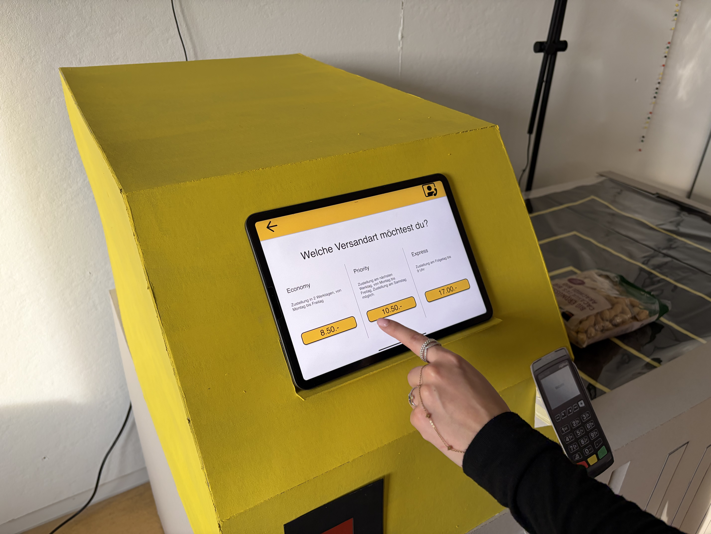
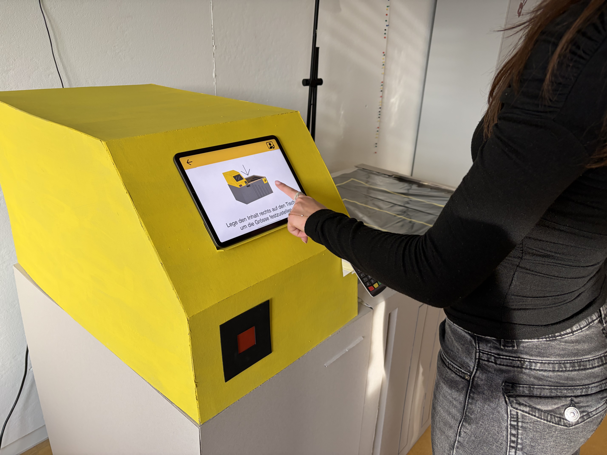
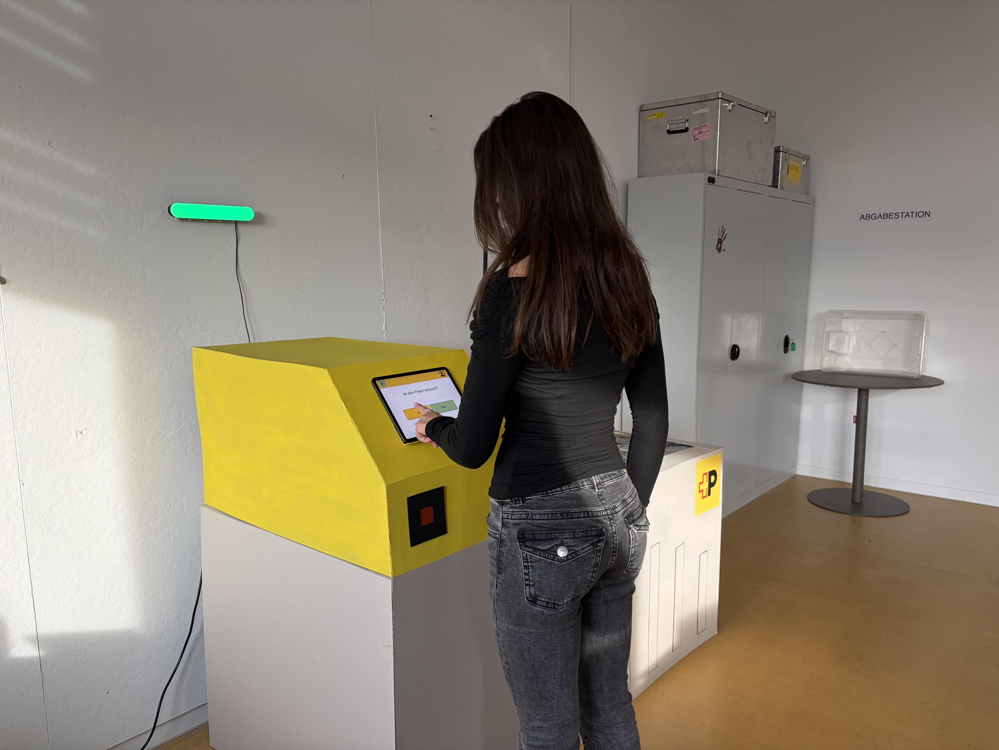
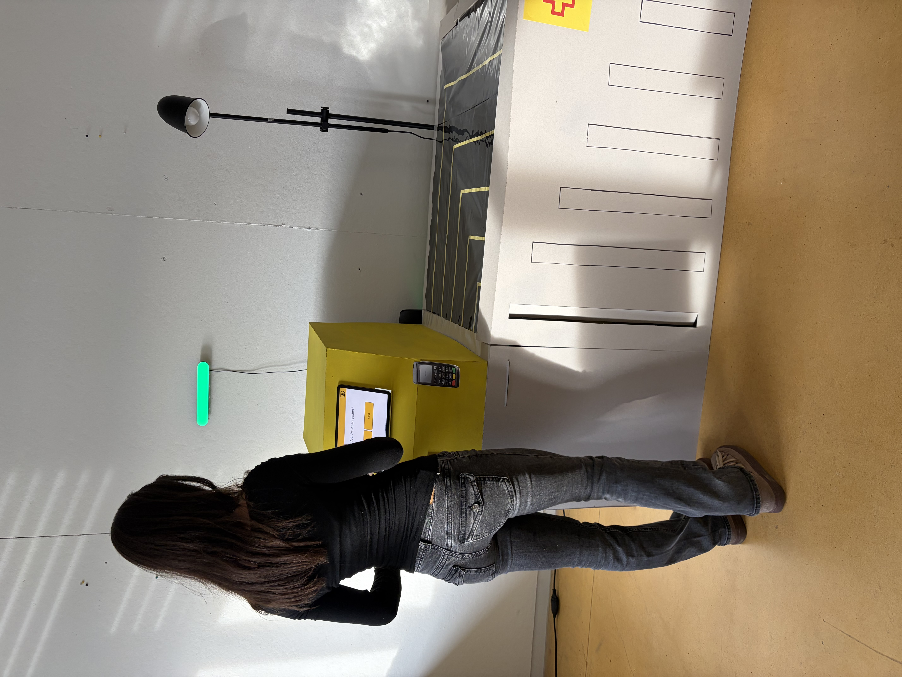
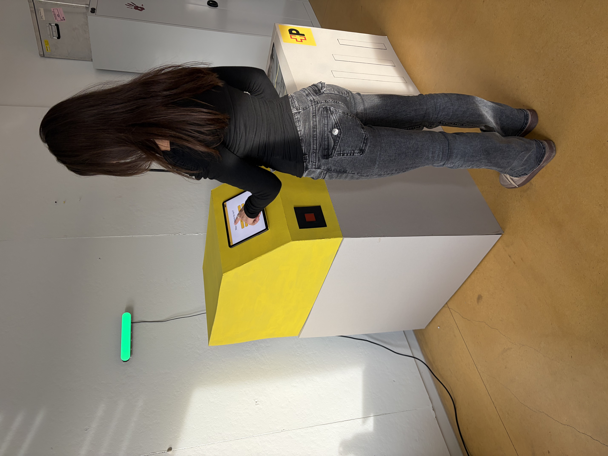
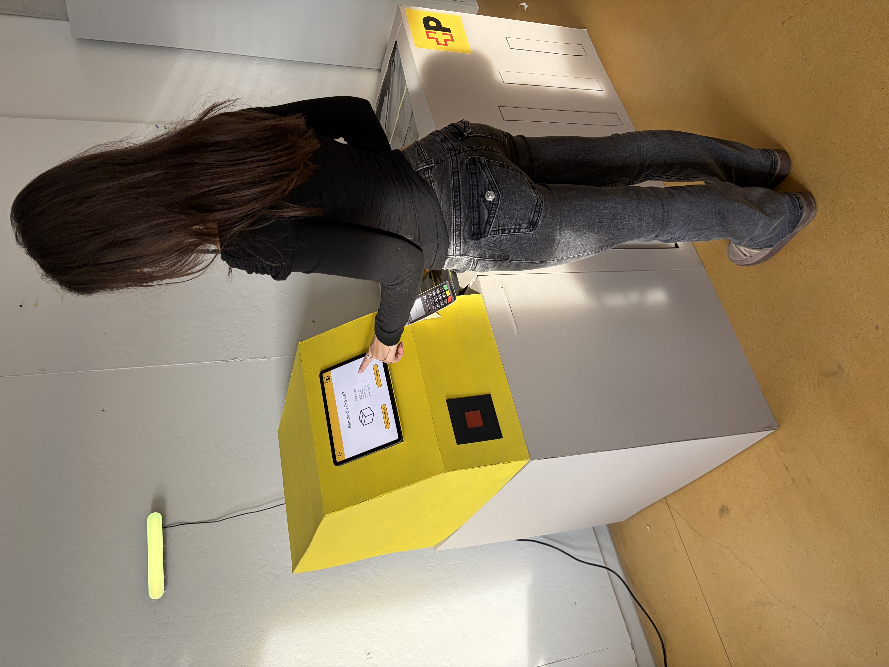
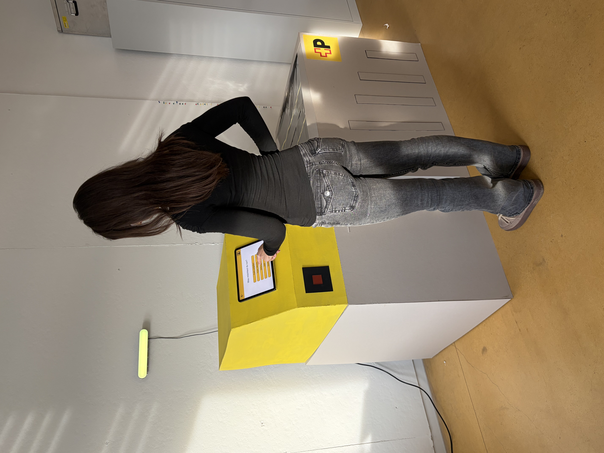
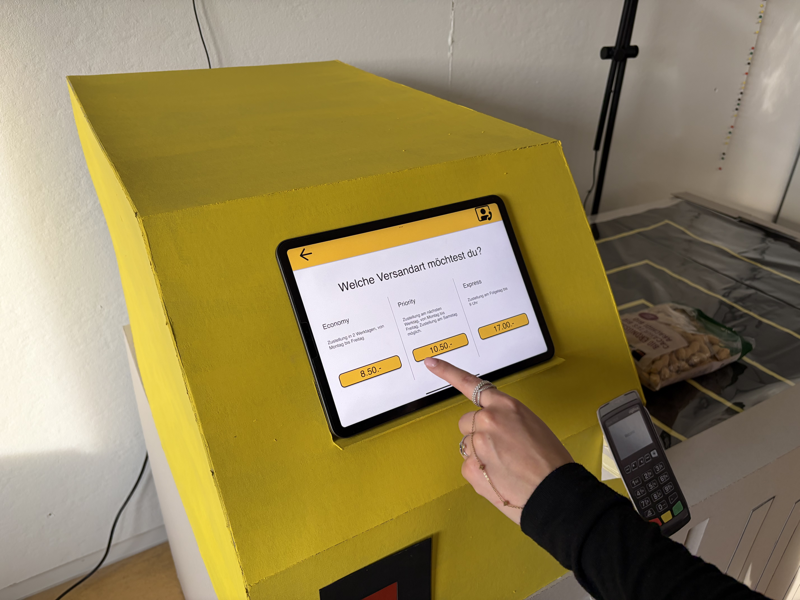
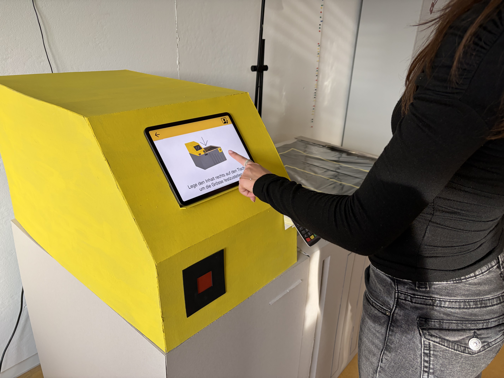
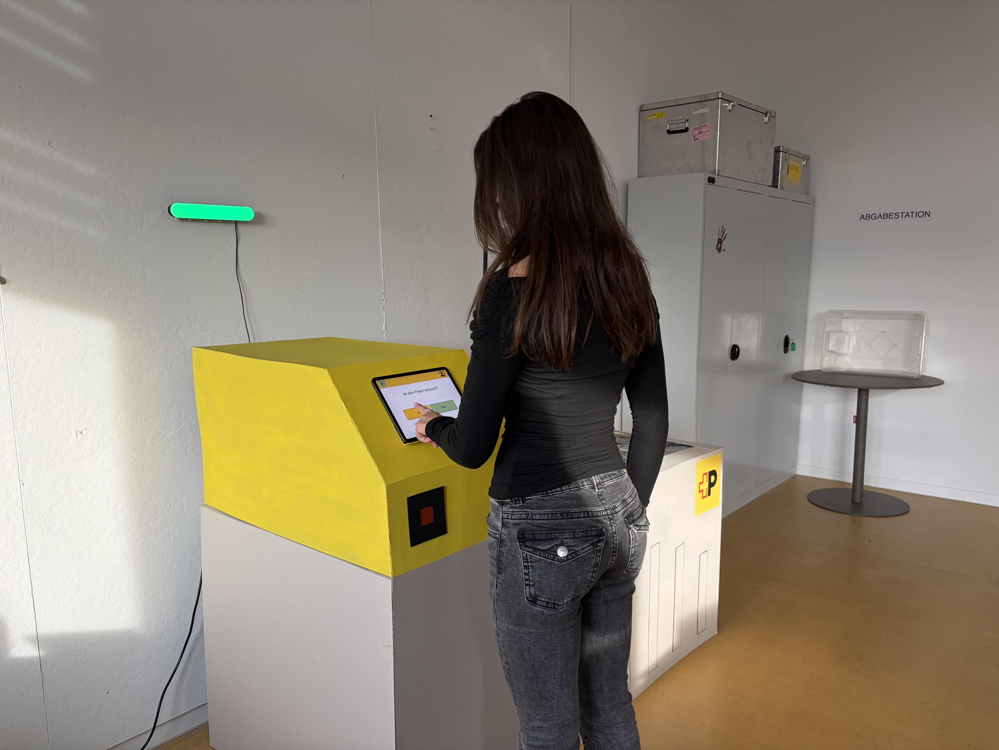
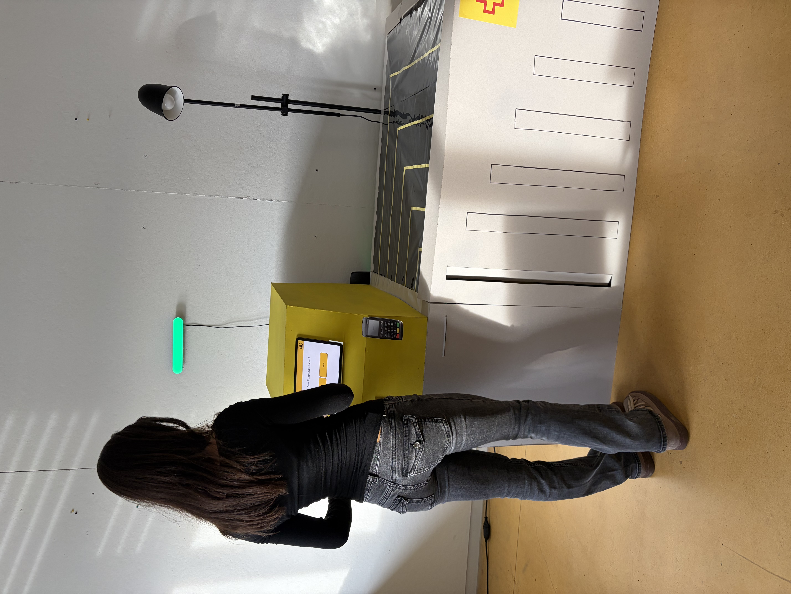
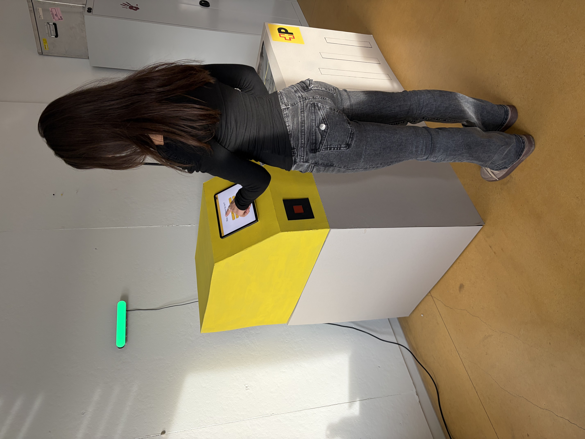
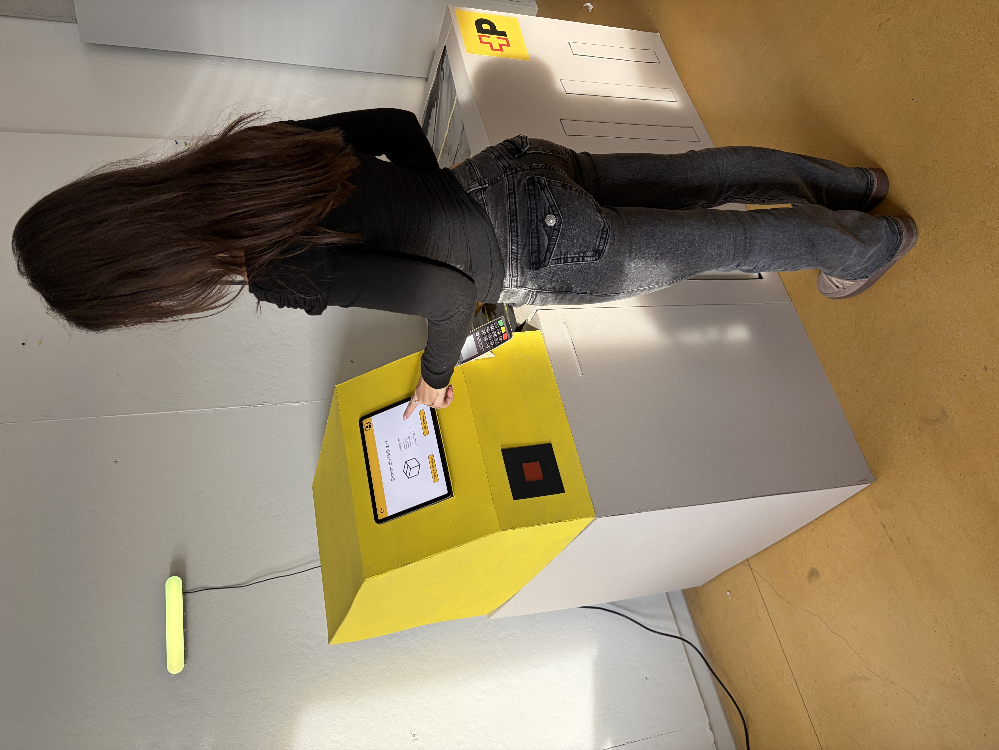
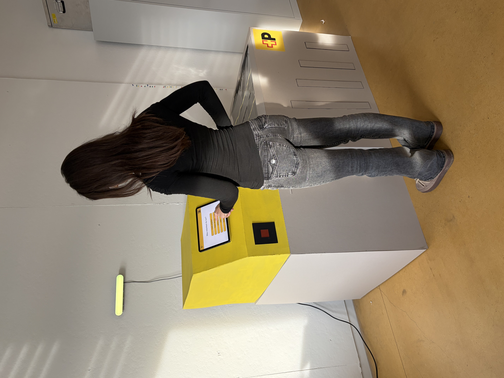